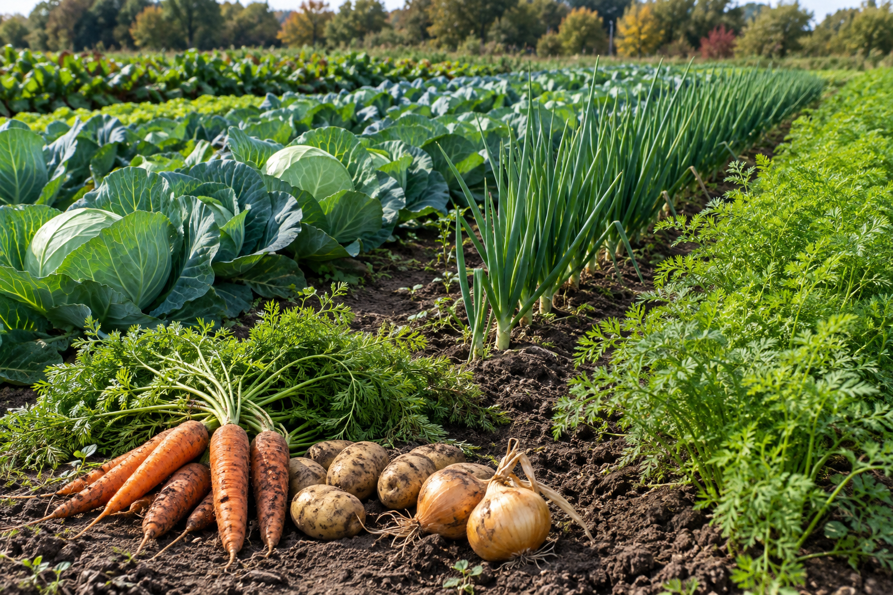
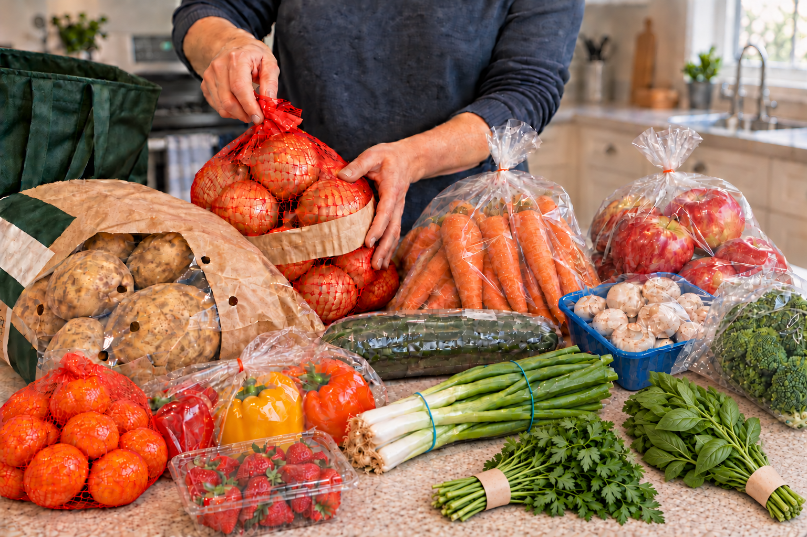
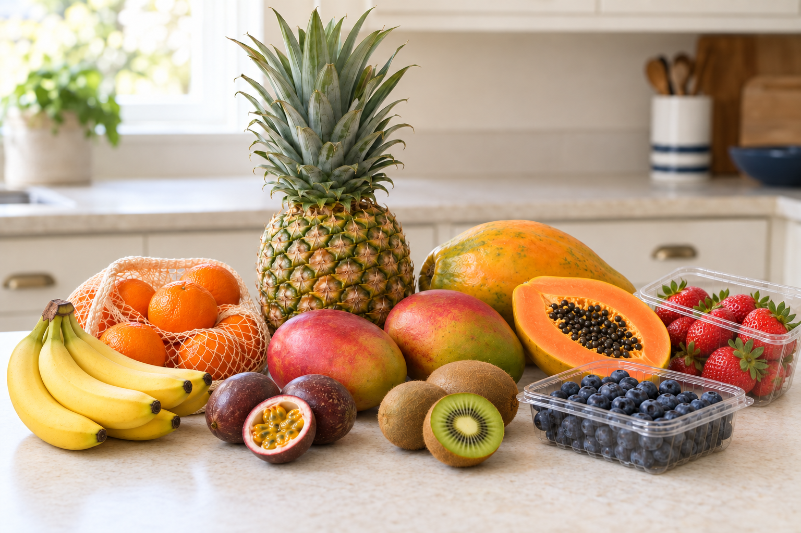
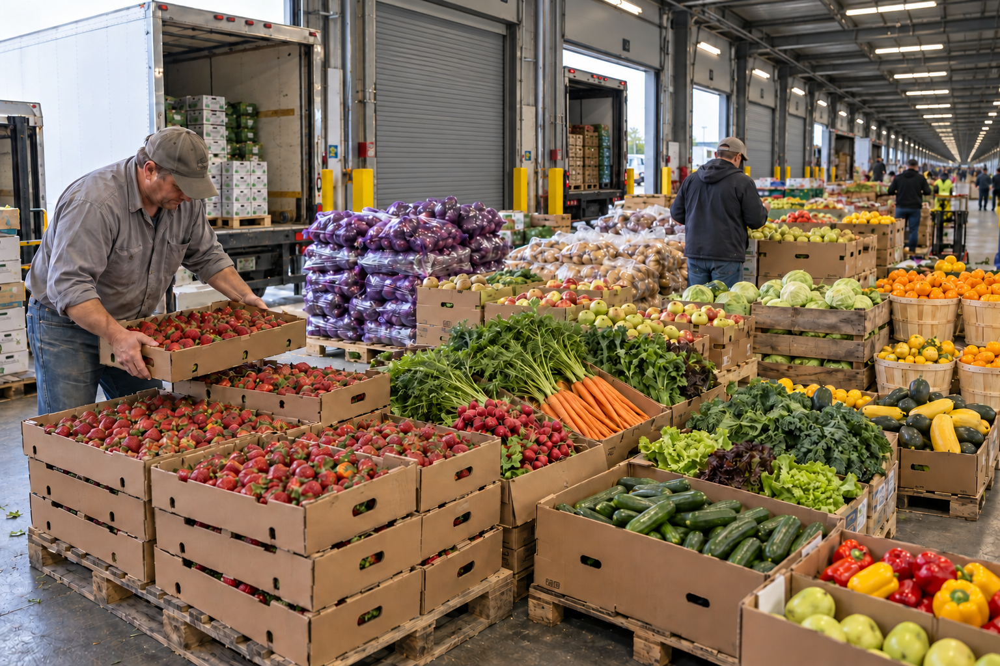

The core basket
The familiar ingredients you reach for, kept at the heart of the catalogue.
About the basketA41 is a Canadian community procurement initiative working to make fresh food more affordable. We bring household orders together and build the supplier relationships behind them.

Food costs take a real bite out of household budgets. By organizing purchases together, we aim to make nutritious food more accessible and affordable.
A small, stable core basket with additional options.
Build an order that fits your household.

The familiar ingredients you reach for, kept at the heart of the catalogue.
About the basket
Something different for the week ahead, with extra options to mix into your usual selection.
How we curateFrom a planned catalogue to food on your table. Here’s how an order comes together.

We curate Canadian supplier relationships, build procurements, and aggregate pricing into the catalogue.
Members select products and submit their orders through the procurement portal.
We procure products fresh, bring them back, and distribute them the same or next day.
During my advanced diploma studies in Supply Chain Management at George Brown Polytechnic, I learned how health and education institutions use group purchasing organizations (GPOs) to combine their purchasing power and access products at lower costs.
That made me ask: could the same approach help everyday Canadians put more affordable food on their kitchen tables?
As an everyday Canadian, I think often about the rising cost of living and the opportunities that feel increasingly out of reach. I wanted to turn what I was learning into something useful for our neighbours, while finding a path into entrepreneurship.
A41 is my starting point: a social enterprise I hope to grow into a sustainable business that serves its community. Working with Canadian farmers and suppliers also creates an opportunity to strengthen the supply chains we depend on and support the businesses behind them.